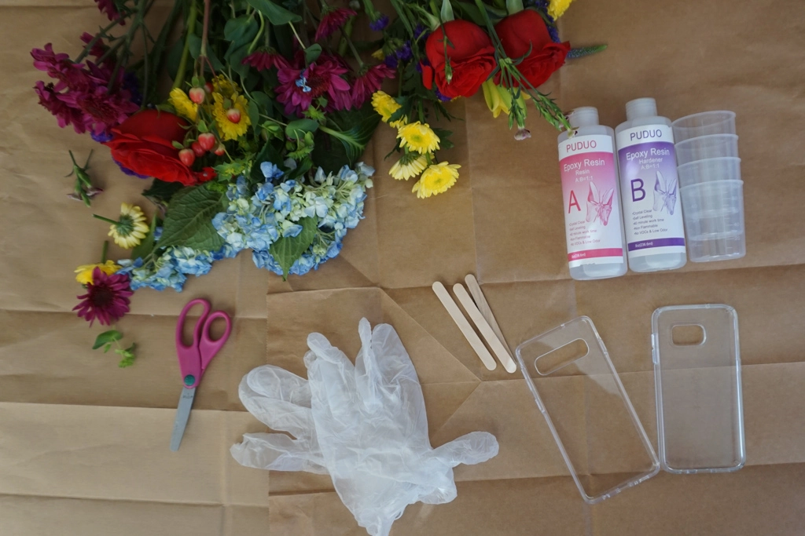
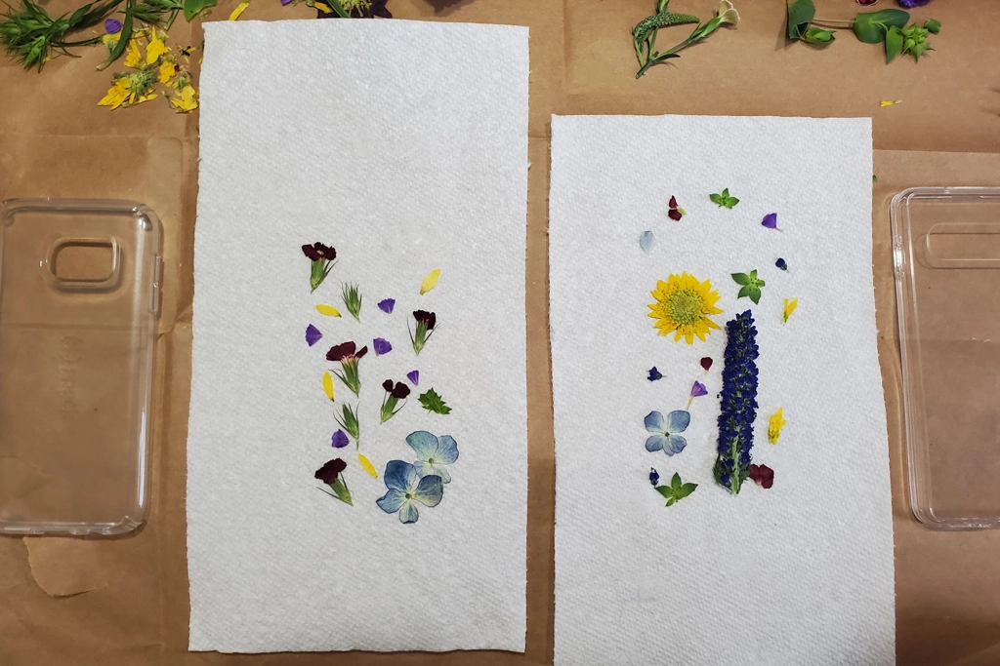
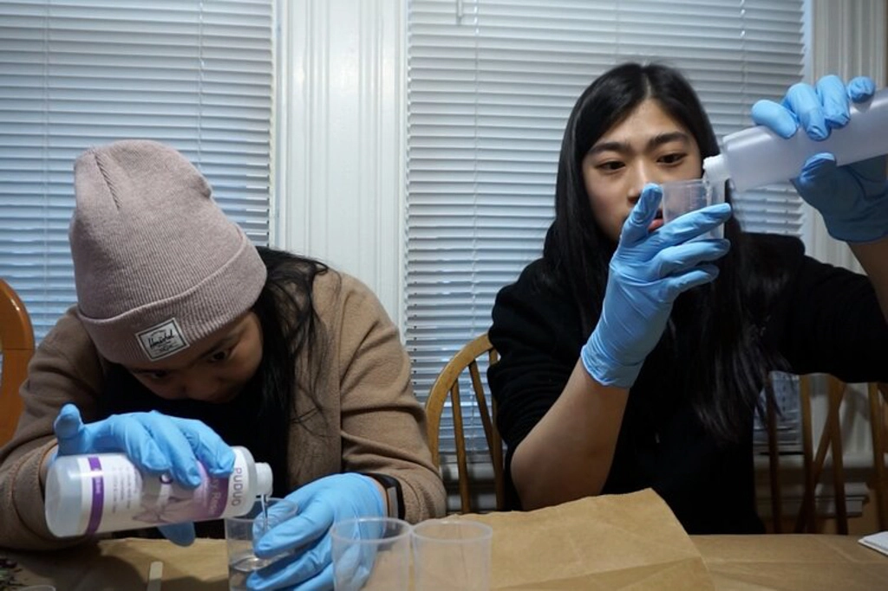
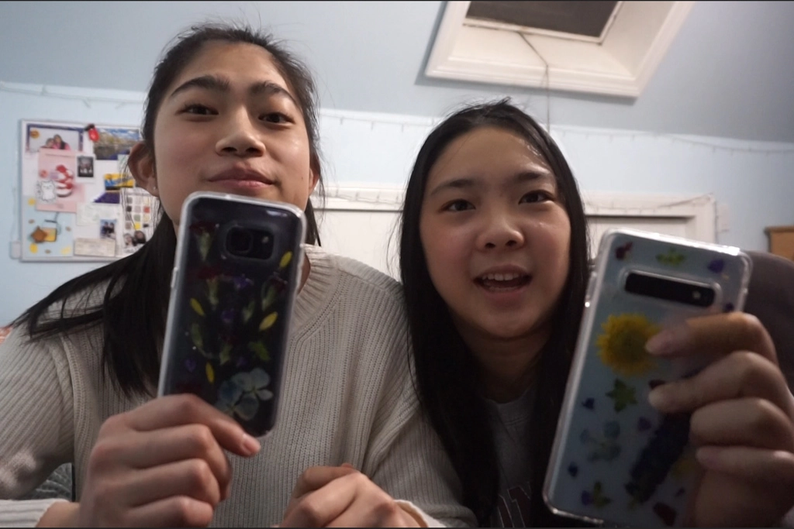

Resin Flower Phone Cases
Jan 28 - Written by Bonnie and Emily
As the resin trend continues to grow and our desire to press and dry flowers lingers, it was a no brainer to create some floral resin phone cases. What better combination than natural flowers and resin!!
Neither one of us has ever used resin before or even dried flowers before so the whole process was new to us. Prior to beginning, we purchased our phone cases and some resin, watched a tutorial or two on how it’s done, and got ourselves a variety of fresh flowers. Once we had everything, we went for it!
The first step is to choose the flowers you want to use. We thought this was going to be simple but little did we know that the flowers would dry differently than how they look fresh. Some of the color of the flowers ended up being a little darker after drying and so we did some trial and error to find the perfect amount of time to microwave flowers in different sizes. Eventually, we finally decided which flowers we wanted to use and got them all dried and ready!
Once we had everything placed, we used some super glue to carefully glue down all of our flowers so that nothing shifts when we go to pour the resin. This simple step was more tedious than we thought as we used tweezers for precision and even then the flowers would still shift a bit. Not to mention, Emily accidentally glued her glove to one of the flowers for a brief moment.
Before we started the resin process, we grabbed some takeout boxes and made DIY stands to prop up our cases so that the excess resin had a place to drip and the cases would be easier to cover. The takeout boxes also made it easier to clean up the resin and transport the phone case while it was curing!
Now, it’s time for the fun part, playing around with the resin! After carefully reading the instructions, we began measuring out each half of the liquids. Though we didn’t quite understand why we had to mix and pour in so many different cups, we followed the instructions anyway as there was more at stake here to go rogue like we often do in our activities.
Once all the resin was mixed, it was time to begin pouring it all over our cases. Not knowing how to go about doing this, we began pouring it a little at a time to ensure everything was covered in a thin even layer. This step may have been one of the simplest except for the fact that our phone cases were clear making it quite difficult to tell if we had covered everything. We definitely suggest some better lighting when you’re doing this so you can get all the nooks and crannies covered with resin.
Some time later when we reached a place we were happy with, we placed lids on our boxes and set them aside to cure for 24 hours. The next day, we noticed that they still weren’t fully cured and so we took the lids off to let them set some more and air out before we began the process of cleaning up all the excess resin drips. Now this step was a bit difficult and included a minor casualty, make sure to be careful while doing this step, as we had to use Xacto knives to carefully cut off the excess. This long and tedious process later, we finally have our completed resin phone cases.
Though they are not perfect, we did a solid job at them. Also, considering this was our very first resin project, we can’t complain with the outcome. Although each step seemed simple enough when we were watching the tutorial, as Bonnie mentions, nothing is ever simple; but always fun! Some things we could have done additionally was a second coat of resin so that the flowers aren’t poking out as much as they are. However, if you’re into a textured phone case, then a single coat is all you need. Overall we’re quite happy with the results and definitely can’t wait to do more resin projects in the future.